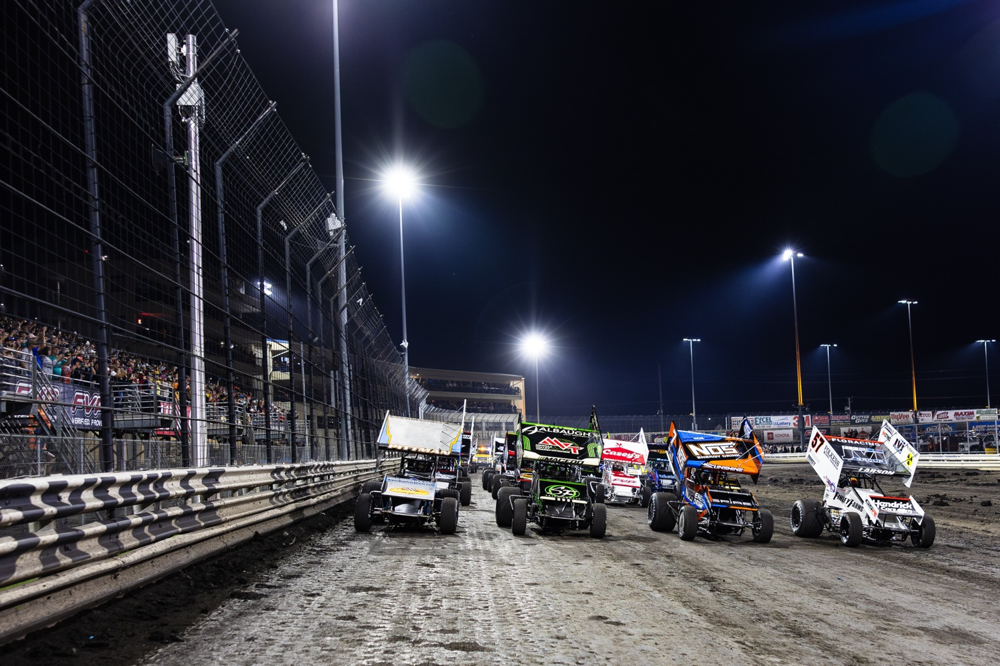

Nov 3: Knoxville Raceway Extends Partnership with World of Outlaws, DIRTVision
Knoxville Raceway extended its sanctioning and streaming partnership with the World of Outlaws and DIRTVision through 2031.

The extension keeps DIRTVision as the platform for Knoxville Raceway’s weekly races and premier events, including the NOS Energy Drink Knoxville Nationals presented by Casey’s on Aug. 11-14, 2027.
“Knoxville Raceway and World Racing Group have a storied history and partnership that we’re thrilled to continue for many years. We continue to focus on filling the grandstands each year and allow those who can’t be at the track to have the best viewing experience no matter where they are through DIRTVision’s growing platform,” said Brian Carter, World Racing Group CEO. “We look forward to further enhancing the at-track and at-home viewing experience every year.”
“We are extremely pleased to extend our partnership with the World of Outlaws NOS Energy Drink Sprint Car Series and DIRTVision,” said Knoxville Raceway General Manager Jason Reed. “DIRTVision has played an important role in connecting our fans, race teams, and marketing partners. We appreciate the value this relationship brings to Knoxville Raceway and look forward to working together for many more seasons.”